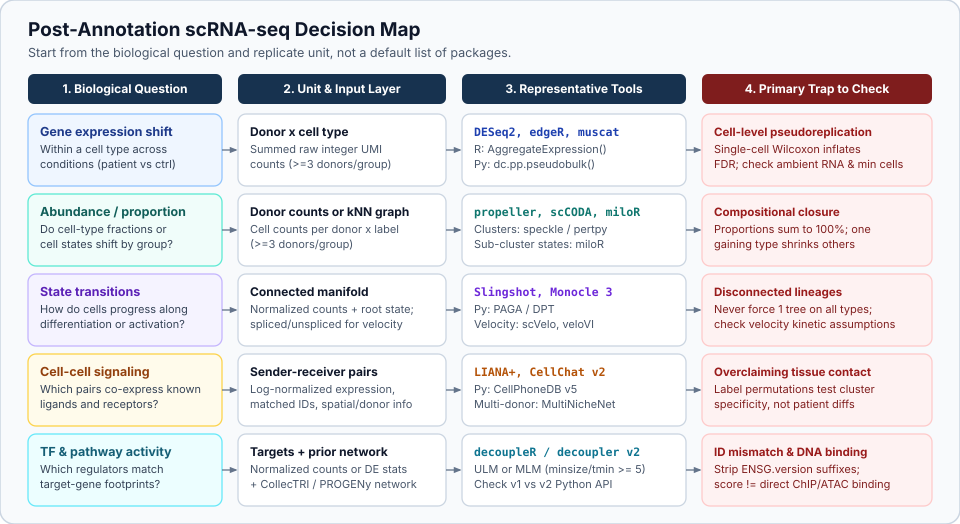
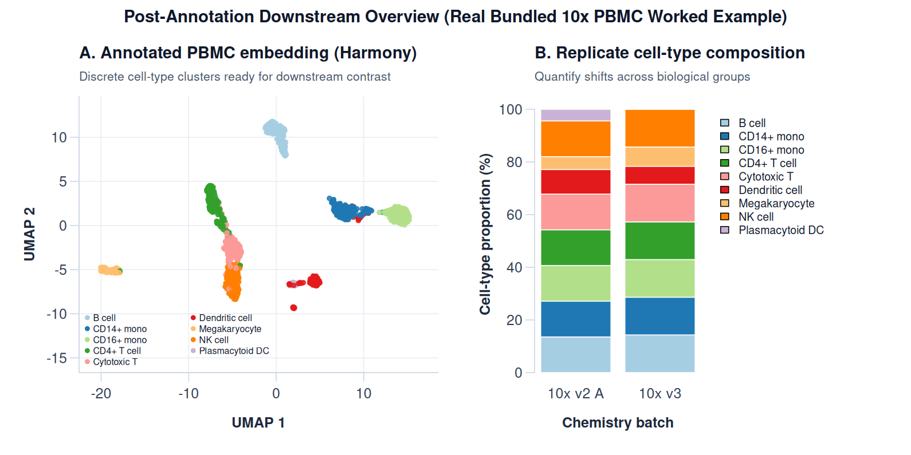

Single-Cell RNA-seq Downstream Analysis
Nasir Mahmood Abbasi, PhD
Bioinformatics Educator

Clustering and cell-type labels give you a map of the cells in your dataset, not biological answers. This guide helps you pick the downstream analysis that matches your biological question and unit of replication, verify your object's counts and gene identifiers before running heavy packages, and avoid false discoveries caused by pseudoreplication or compositional shifts.
Format: Conceptual guide (about 20 minutes). By the end of this guide, you will be able to:
- Match a post-annotation question to one of five main branches: pseudobulk differential expression, compositional abundance testing, trajectory or RNA-velocity inference, cell-cell communication, or regulon activity.
- Check your annotated Seurat or AnnData object for raw counts, donor metadata, minimum cell counts per group, and gene-ID overlap before running any downstream model.
- Spot common failure modes, including single-cell pseudoreplication, compositional closure, ambient RNA carryover, and R/Python package version mismatches.
Prerequisites and scope: Complete Single-Cell RNA-seq Basics and Choosing and Checking Cell-Type Annotations first, or bring a clustered, annotated object. The preflight checks below run locally with base R 4.6.1 on public PBMC summary tables; full multi-package workflows (such as CellChat, CellPhoneDB, Milo, and decoupleR) require your own multi-donor object and are documented as API patterns and decision rules.
1. Start with your biological question and statistical unit
Before installing or running any downstream package, write down three things: the comparison you want to test, the experimental unit (also called the statistical unit), and what evidence would disprove your conclusion. In single-cell studies, cells from the same patient, biopsy, or mouse share the same genetic background, tissue handling, and technical batch. They are correlated subsamples within one biological replicate, not independent replicates (Squair et al., 2021).
Treating 5,000 T cells from 2 donors as 5,000 independent observations is called pseudoreplication. It shrinks standard errors artificially and turns donor-to-donor noise or ambient RNA differences into tiny p-values that fail to reproduce in new patients. Keep donor ID, condition, and batch columns attached to every cell through all downstream steps.
- Raw integer UMI counts (Seurat v5
RNAassaycountslayer; Pythonadata.layers["counts"]oradata.raw) for pseudobulk count models. - Log-normalized expression (Seurat
datalayer; Python log1p-normalizedadata.X) for ligand-receptor scoring and footprint (target-gene) models. - Spliced (mature mRNA) and unspliced (intron-retaining pre-mRNA) count matrices (from
velocyto,STARsolo, oralevin-fryinadata.layers["spliced"]andadata.layers["unspliced"]) only if you plan to run RNA velocity. - Reviewed metadata columns containing stable cell barcodes, cell-type annotations,
sample_id(donor),condition, and technicalbatch.
2. Match your question to one of five downstream branches
Different biological questions require different input layers, statistical units, and sanity checks. Use the decision map and comparison table below to select the branch that fits your design.

| Biological question | Recommended tools (R / Python) | Required input & unit | Primary trap to check |
|---|---|---|---|
| Gene expression change between conditions within a cell type | Pseudobulk aggregation + DESeq2, edgeR (glmQLFit), or muscat (pseudobulk DE tutorial) | Raw integer UMI counts summed per donor x cell type; donor is the replicate (>=3 per group; >=10-20 cells per donor-type pair) | Cell-level Wilcoxon p-values on pooled cells (pseudoreplication) and ambient RNA carryover |
| Cell-type proportion or state abundance shifts across groups | propeller (speckle, R), scCODA (pertpy, Python), or cluster-free miloR / milopy | Cell counts per donor x population, or k-nearest-neighbor (kNN) graph neighborhoods across >=3 biological replicates per condition | Compositional closure: because proportions sum to 100%, expansion of one type shrinks all other percentages even when absolute counts are unchanged |
| Continuous differentiation or activation progression | Slingshot, Monocle 3, PAGA/DPT, or RNA velocity via scVelo / veloVI | Connected manifold of transitional states with an externally justified root (plus spliced/unspliced counts for velocity) | Connecting unrelated mature lineages into one tree, or trusting velocity arrows when kinetic assumptions break |
| Candidate ligand-receptor signaling between cell populations | LIANA+ consensus, CellChat v2, CellPhoneDB v5, or multi-sample MultiNicheNet | Log-normalized expression, matched species and gene IDs, subunit rules, and spatial or multi-donor context | Treating single-dataset cell-label permutations as patient-level differences or physical contact in tissue |
| Transcription-factor or pathway activity from target genes | CollecTRI or PROGENy networks scored with decoupleR (R) / decoupler v2 (Python) via ULM/MLM, or VIPER | Log-normalized expression (or pseudobulk DE test statistics) + signed regulator-target network (minsize/tmin >= 5) | Unstripped Ensembl version suffixes (0% overlap) or claiming direct chromatin binding without ATAC/ChIP data |
3. How each branch works, when to use it, and sensible defaults
Every downstream method makes assumptions about how counts were generated and what constitutes a replicate. Review the decision criteria below for the branch you plan to run.
- Pseudobulk differential expression (within-type gene shifts): Aggregation restores donor-level dispersion estimates: summing raw UMI counts across all cells from each
(sample_id, cell_type)pair reduces zero-inflation and puts donor variability back into the dispersion estimate, allowing mature bulk models such asDESeq2,edgeR, ormuscatto control false discoveries (Crowell et al., 2020; Squair et al., 2021).
Sensible defaults and checks: Require at least 3 biological replicates per condition and drop any(sample_id, cell_type)combination with fewer than 10 to 20 cells before fitting the model. Inspect highly abundant transcripts from neighboring cell types (such as myeloid LYZ, erythrocyte HBB, or epithelial keratins) because batch-dependent ambient RNA soup in empty droplets can leak into other clusters and masquerade as condition-specific DE. - Differential abundance and compositional analysis (population shifts): Standard t-tests and chi-square tests fail on cell percentages because of compositional closure: within every library, cell-type proportions must sum to 100% (1.0). If infiltrating neutrophils double in an inflamed tissue biopsy, resident T-cell percentages drop mechanically even if the actual number of T cells per milligram of tissue never changed. Tissue dissociation also recovers hardy lymphocytes more efficiently than fragile epithelial or stromal cells.
When to use X vs Y: Usepropeller(in the R packagespeckle, Phipson et al., 2022) orscCODA(viapertpypt.tl.Sccoda()in Python, Büttner et al., 2021) when your cell types form discrete, well-annotated clusters. InscCODA, pick a stable, abundant reference population (orreference_cell_type="automatic") whose baseline abundance is expected to stay constant. UsemiloR(R, Dann et al., 2022) ormilopy(Python) when shifts happen inside a broad cluster or along a continuous gradient; evaluateSpatialFDR(typically< 0.1) rather than unadjusted p-values because kNN neighborhoods overlap on the graph. - Trajectory inference and RNA velocity (continuous transitions): Trajectories require continuous biological intermediates: pseudotime orders cells by transcriptional similarity, not real clock time, and is valid only when transitional intermediates were captured (for example, bone-marrow hematopoiesis or acute-to-exhausted CD8+ T-cell differentiation). Do not force one minimum-spanning tree across unrelated mature populations such as B cells, monocytes, and endothelial cells.
When to use X vs Y: UseSlingshotfor clean, low-dimensional clusters with a few smooth lineages, andMonocle 3orPAGA/Diffusion Pseudotime (DPT) when a manifold contains multiple branches or loops. Always supply an externally justified root state (for example, stem marker CD34 expression or earliest timepoint). For RNA velocity (scVeloorveloVI), verify that unspliced intronic reads are well-represented and inspect velocity uncertainty: Gorin et al. (2022) showed that transcriptional bursts or multi-rate splicing kinetics can invert velocity arrows, andveloVI(Gayoso et al., 2024) quantifies posterior uncertainty so you can check whether a velocity model fits your data at all. - Cell-cell communication (ligand-receptor scoring): Tools such as
CellChatv2,CellPhoneDBv5, andLIANA+(Dimitrov et al., 2024) combine curated ligand-receptor databases (including multi-subunit protein complexes such as TGF-beta receptors or integrins) with group-level expression summaries. Require a minimum expression prevalence per cluster (for example, CellPhoneDB's defaultthreshold = 0.1, requiring expression in at least 10% of cells in each interacting group) so a handful of outlier cells do not drive an interaction.
API and replication checks: In CellPhoneDB v5,counts_datadefaults to"ensembl", so passcounts_data="hgnc_symbol"when your matrix uses gene symbols. Most importantly, cell-label permutation tests in single-dataset CellChat or CellPhoneDB runs measure cell-type specificity within one dataset, not biological replication across patients. For multi-sample condition contrasts, use donor-aware frameworks such asMultiNicheNetorLIANA+withtensor_cell2cell, and pair expression predictions with spatial proximity data (spatial transcriptomics guide). - Regulator and pathway activity (footprint scoring): Transcription-factor (TF) mRNAs such as STAT1, NFKB1, or FOXP3 are often lowly expressed and drop out in single-cell libraries. Footprint methods like
decoupleR(R) anddecoupler(Python) overcome dropout by scoring coordinated shifts across dozens of signed target genes in curated networks such asCollecTRI(for TFs, Müller-Dott et al., 2023) orPROGENy(for signaling pathways), using univariate or multivariate linear models (ULM/MLM; Badia-i-Mompel et al., 2022).
Sensible defaults and version check: Filter small regulons withminsize = 5(R) ortmin = 5(Python v2) so 1- or 2-gene sets do not produce unstable t-statistics. Verify your Pythondecouplerversion before running code: v1.x useddc.run_mlm(mat=adata, net=net)and wrote toadata.obsm['mlm_estimate']andadata.obsm['mlm_pvals'], whereas scverse-aligned v2.x usesdc.mt.mlm(data=adata, net=net, tmin=5),dc.pp.pseudobulk(...), anddc.op.collectri(...), writing results toadata.obsm['score_mlm']andadata.obsm['padj_mlm'].
4. Worked base-R preflight on real PBMC data
Before fitting any downstream model, run three quick diagnostic checks on your annotated data: (1) verify gene-ID overlap against your prior database, (2) inspect the exact cell count per sample and cell type, and (3) check non-target lineages for ambient RNA carryover across batches.

10x v2 A (n = 590 cells) and 10x v3 (n = 559 cells). Notice that the purple Plasmacytoid DC bar is present in 10x v2 A (26 cells) and absent in 10x v3 (0 cells), shifting all other percentages upward.Run this self-contained base-R script from the repository root using the supplied public PBMC tables (annotation_label_counts.csv and marker_expression_per_cell.csv):
# 1. Audit Ensembl version suffixes before running CellPhoneDB or decoupleR
matrix_genes <- c("ENSG00000167286.9", "ENSG00000156738.18",
"ENSG00000090382.7", "ENSG00000105374.10")
resource_genes <- c("ENSG00000167286", "ENSG00000156738",
"ENSG00000090382", "ENSG00000115523")
raw_matched <- length(intersect(matrix_genes, resource_genes))
clean_ids <- sub("\\.[0-9]+$", "", matrix_genes)
clean_match <- length(intersect(clean_ids, resource_genes))
cat(sprintf("Raw overlap: %d/%d (%.0f%%) | Version-stripped overlap: %d/%d (%.0f%%)\n",
raw_matched, length(matrix_genes), 100 * raw_matched / length(matrix_genes),
clean_match, length(matrix_genes), 100 * clean_match / length(matrix_genes)))
# 2. Check sample-by-population cell counts and proportions (compositional closure)
counts <- read.csv("files/pbmc-methods-worked-example/observed/annotation_label_counts.csv",
stringsAsFactors = FALSE)
src_counts <- subset(counts, label_source == "source_label")
tab <- xtabs(n ~ label + group, data = src_counts)
props <- round(100 * prop.table(tab, margin = 2), 1)
print(cbind(v2_n = tab[, 1], v2_pct = props[, 1], v3_n = tab[, 2], v3_pct = props[, 2]))
# 3. Sample-by-population marker means across two PBMC chemistries
expr <- read.csv("files/pbmc-methods-worked-example/observed/marker_expression_per_cell.csv",
stringsAsFactors = FALSE)
pb <- aggregate(normalized_log_expression ~ group + source_label + marker,
data = expr, FUN = mean)
sub_pb <- subset(pb, source_label %in% c("CD4+ T cell", "B cell", "CD14+ monocyte") &
marker %in% c("CD3D", "MS4A1", "LYZ"))
sub_pb$normalized_log_expression <- round(sub_pb$normalized_log_expression, 3)
wide <- reshape(sub_pb, idvar = c("group", "source_label"),
timevar = "marker", direction = "wide")
names(wide) <- sub("^normalized_log_expression\\.", "", names(wide))
wide <- wide[order(wide$source_label, wide$group), ]
print(wide, row.names = FALSE)Observed output (executed locally with R 4.6.1):
Raw overlap: 0/4 (0%) | Version-stripped overlap: 3/4 (75%)
v2_n v2_pct v3_n v3_pct
B cell 80 13.6 80 14.3
CD14+ monocyte 80 13.6 80 14.3
CD16+ monocyte 80 13.6 80 14.3
CD4+ T cell 80 13.6 80 14.3
Cytotoxic T cell 80 13.6 80 14.3
Dendritic cell 55 9.3 38 6.8
Megakaryocyte 29 4.9 41 7.3
Natural killer cell 80 13.6 80 14.3
Plasmacytoid dendritic cell 26 4.4 0 0.0
group source_label CD3D LYZ MS4A1
10x Chromium (v2) A B cell 0.073 0.167 1.355
10x Chromium (v3) B cell 0.042 0.026 1.699
10x Chromium (v2) A CD14+ monocyte 0.129 4.979 0.000
10x Chromium (v3) CD14+ monocyte 0.030 4.622 0.010
10x Chromium (v2) A CD4+ T cell 1.325 0.196 0.019
10x Chromium (v3) CD4+ T cell 1.449 0.035 0.015What this output checks and proves:
- Gene-ID mismatch: GENCODE version suffixes (such as
ENSG00000167286.9for CD3D) give0/4 (0%)overlap against unversioned Ensembl IDs until stripped withsub("\\.[0-9]+$", "", ids). Always printmatched / totalbefore running CellPhoneDB or decoupleR. - Compositional closure and zero-cell groups: In the bundled count table, six populations (B cells, CD14+ monocytes, CD16+ monocytes, CD4+ T cells, Cytotoxic T cells, and NK cells) have identical cell counts in both batches (
80vs80), yet their percentages rise from13.6%to14.3%solely because Plasmacytoid dendritic cells drop from26(4.4%) to0(0.0%). In addition, a within-pDC pseudobulk DE comparison between these two groups would fail immediately because10x v3has 0 pDCs. - Ambient RNA carryover: Expected lineage markers peak in the right populations (MS4A1 in B cells, LYZ in CD14+ monocytes, CD3D in CD4+ T cells). However, notice low-level LYZ in B cells (
0.167inv2 Avs0.026inv3) and CD4+ T cells (0.196vs0.035). That signal comes from ambient myeloid transcripts in the suspension rather than true lysozyme transcription in lymphocytes, showing why ambient soup differences across batches become false-positive DE genes if ignored.
5. Common mistakes and how to fix them
Most failed or misleading downstream single-cell runs trace back to one of four predictable bugs.
| Symptom or error message | Root cause | Exact fix |
|---|---|---|
Warning: No layers found matching search pattern or Error: subscript out of bounds after Seurat AggregateExpression() | Seurat v5 silently replaces underscores (_) with hyphens (-) in group.by labels (for example, donor_1 becomes donor-1), breaking joins back to your sample sheet. | Standardize metadata IDs before aggregating with obj$sample_id <- gsub("_", "-", obj$sample_id) and verify colnames(pb_mat) matches your sample table. |
Error in DESeqDataSetFromMatrix: some values in assay are not integers | Log-normalized counts (data layer or scaled adata.X) were summed instead of raw UMI counts. | Pull integer counts explicitly: AggregateExpression(obj, assays = "RNA", group.by = c("sample_id", "cell_type"), return.seurat = FALSE)$RNA (uses the counts layer) or dc.pp.pseudobulk(adata, ..., layer="counts", mode="sum"). |
Empty CellPhoneDB / decoupleR output, or KeyError: 'score_mlm' | Gene IDs have Ensembl version suffixes, counts_data does not match matrix symbols, or Python decoupler v1 vs v2 keys were mixed. | Strip \.[0-9]+$ from Ensembl IDs or set counts_data="hgnc_symbol"; check decoupler.__version__ (v2 uses dc.mt.mlm and adata.obsm["score_mlm"], v1 used dc.run_mlm and mlm_estimate). |
miloR or propeller fails with design matrix / degrees-of-freedom errors | Only 1 biological replicate exists per condition, or sample_id was mapped to cell barcodes or sequencing lanes instead of donors. | Verify table(meta$sample_id, meta$condition) shows at least 3 distinct donors per condition before modeling; otherwise report descriptive summaries only. |
6. Make plots answer a specific question
Match each plot type to the claim you are making and inspect donor-level spread, not just cluster averages:
- UMAP or t-SNE embeddings: Use them only to show where cell-type annotations fall in the low-dimensional space used to define them. UMAP distorts global distances and cluster sizes, so visual separation is not a hypothesis test.
- Pseudobulk DE and regulon results: Pair a volcano or MA plot with donor-level point/box plots (one dot per donor x cell type) of top DE genes or TF activity scores so readers can see whether one outlier donor drives the effect.
- Compositional shifts: Plot per-sample stacked bars or donor-level proportion boxplots alongside formal log-fold-change and FDR/SpatialFDR intervals.
- Captions: Always state the plotted assay or layer (raw counts, log-normalized, or z-scored), sample replicate count
n, and batch grouping.
7. Check your understanding
Exercise 1: Pooled permutation p-values in cell-cell communication
A report claims that macrophages signal more strongly to fibroblasts in treated tissue than in control tissue because a CellPhoneDB cell-label permutation test returned p < 0.001 in a merged dataset containing 1 treated sample and 1 control sample. Is that sufficient evidence for a condition-level change or for signaling in tissue?
Reasoned feedback
No. Cell-label permutations test whether ligand-receptor co-expression is specific to those cell-type labels within the supplied cells; they do not create biological replicates or separate treatment effect from sample-to-sample variation when n = 1 per group. Transcript co-expression also does not establish protein translation or physical contact in tissue. A condition claim requires multiple biological replicates per condition (for example via MultiNicheNet or donor-level comparisons) plus spatial or experimental validation.
Exercise 2: Diagnosing the PBMC count table
Look back at the base-R output in Section 4: B cells are 13.6% in 10x v2 A and 14.3% in 10x v3, while Plasmacytoid dendritic cells (pDCs) are 26 cells in v2 A and 0 cells in v3. Which two downstream mistakes would occur if you ran naive percentage t-tests and within-pDC pseudobulk DE on these two groups?
Show solution
First, a naive test on percentages would suggest B cells expanded from 13.6% to 14.3% even though their absolute count is identical (80 cells in both batches), an artifact of compositional closure when pDCs dropped to 0. Second, within-pDC pseudobulk DE is undefined because one group has zero pDCs, and both batches have only n = 1 sample per chemistry, leaving zero degrees of freedom for donor-level dispersion estimation.
Pre-analysis checklist
Before launching a downstream run, record these five items for the branch you chose:
- Biological question, statistical unit (donor, neighborhood, or cell manifold), and intended interpretation
- Input object, expression layer (raw integer counts vs log-normalized vs spliced/unspliced), species, gene-ID type, and annotation column
- Biological replicate count per condition (
n >= 3) and expected confounders (batch, ambient RNA, dissociation bias) - Tool, prior database/network release (for example, CollecTRI or CellChatDB v2), and exact package version
- One preflight failure check (ID overlap, min cells per pseudobulk, or velocity uncertainty) and one orthogonal validation route (flow cytometry, multiplex imaging, or perturbation)
8. Recap, next steps, and references
Three rules to carry forward: (1) aggregate or block by biological replicate (donor) before testing condition differences, (2) verify your object's count layer, gene-ID format, and per-donor cell counts before running downstream models, and (3) treat expression-based trajectories, communication scores, and regulons as hypothesis generators that require orthogonal validation.
Next steps on The Omics Hub:
- Run a complete donor-level DE workflow in the Pseudobulk Differential Expression guide, or review study design in Experimental Design and Batch Effects.
- Explore specialized modalities: CITE-seq WNN Multi-Omics guide, inferCNV Copy Number Variation guide, Spatial Transcriptomics guide, and Visualizing Single-Cell Data with R Packages.
Primary literature and official documentation:
- Squair et al. (2021), Confronting false discoveries in single-cell differential expression, Nature Communications, and Crowell et al. (2020), muscat multi-sample multi-group scRNA-seq state transitions, Nature Communications.
- Phipson et al. (2022), propeller / speckle, Bioinformatics; Büttner et al. (2021), scCODA, Nature Communications; and Dann et al. (2022), Differential abundance testing using kNN graphs (Milo), Nature Biotechnology.
- Slingshot Bioconductor package, Monocle 3 documentation, Gorin et al. (2022), RNA velocity unraveled, PLOS Computational Biology, and Gayoso et al. (2024), veloVI, Nature Methods.
- Dimitrov et al. (2024), LIANA+, Nature Cell Biology (LIANA+ documentation); CellChat repository; CellPhoneDB documentation; and MultiNicheNet repository.
- Badia-i-Mompel et al. (2022), decoupleR, Bioinformatics Advances, and Müller-Dott et al. (2023), CollecTRI, Nucleic Acids Research (decoupler documentation).
The base-R feature-ID overlap and PBMC sample-by-population summary above were executed locally with R 4.6.1 on the supplied repository table; full CellChat, CellPhoneDB, Milo, and decoupleR pipelines were not executed here and require your own annotated object and version records. If you find an error or broken reference, please report it through the Contact page.
Author: Nasir Mahmood Abbasi, PhD - Category: Single-Cell RNA-seq